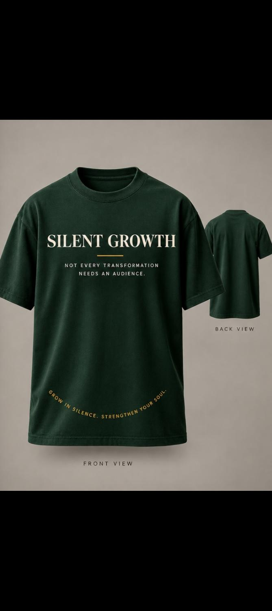

It is not
Disappearance
You are not being asked to vanish from your own life.
Silent Growth is a movement of quiet strength. It is a space for healing, restoration, awareness, discipline, self-mastery, faith and becoming.
It is not an invitation to disappear. Not emotional suppression. Not distrust. Not coldness. And not silence for silence's sake.
It is the practice of becoming intentional about what you carry, what you release, what you learn, and who you choose to become.
You are not being asked to vanish from your own life.
Feeling less is not the goal. Feeling honestly is.
Quiet is not a wall you build against people.
Strength, here, does not require hardness.
Silence is the room. Growth is why you entered.
“Silence is not the destination. Growth is.”Silent Growth
Seven stages of inner work. Not a checklist, but a movement from noise toward clarity, from reaction toward choice, and from survival toward becoming.
Create enough inner space to hear what noise has been covering. Silence here is presence, not disappearance.
See yourself honestly: your patterns, wounds, motives, strengths, fears and choices without turning awareness into self-condemnation.
Learn the difference between what belongs to you and what does not. Respond with intention instead of surrendering your life to every impulse.
Turn what you understand into what you practice. Small promises kept to yourself become evidence of change.
Release the need to be understood, approved, chosen or constantly reassured. Detachment is freedom, not indifference.
Choose where your energy is going. Purpose begins to replace reaction when your life has somewhere meaningful to move toward.
Become. Not perfectly. Not publicly. Through restoration, wisdom, courage and repeated choices that make your life more your own.

A 30-day journey into self-awareness, healing and inner strength. Not every transformation needs an audience.
Across thirty days you examine the noise around you, meet parts of yourself that may have been avoided, practise new choices, and create principles that can support your life beyond this workbook.
Quiet statements for people who are building in private.

Deep forest green. Cream and gold type. The words you return to when the noise gets loud.
Apparel drops and order details will be announced on Substack. No noise, no inventory theatre — when a run is ready, the list will know first.
Get notified on SubstackReflections, poetry, healing, discipline, identity, purpose, faith and observations from ordinary life — published on Substack.
Essays and quiet lessons live at sgrowth.substack.com — the ongoing body of the work.
Open SubstackA future does not become real because it was announced. It becomes real in the hours no one is watching.
Essays and honest observations about the things we discover when performance stops.
A journey through identity, approval, performance, self-worth, people-pleasing, boundaries, over-control and the difficult freedom of becoming oneself.
Other writing projects in the wider body of work include:
People can survive loss, absence, disappointment, pressure and unanswered questions—and still decide that their story will not end there.
Silent Growth exists in that space between what happened and who you become because of it. It is about restoration without pretending the wound never existed; discipline without cruelty; faith without performance; and strength that does not need to shout.
Founder
Musawenkosi Vundla is the person behind Silent Growth—not as a perfect guru, but as someone walking the journey too. The work comes from lived reflection, honest questions and the belief that becoming is a lifelong practice.
“You don't have to announce your transformation. Let your life reveal it.”Grow in silence • Strengthen your soul.
Silent Growth is a living body of writing, reflection and practice. Return for new lessons, essays, poetry and quiet reminders to keep becoming.
The ongoing journal and announcements live on Substack. Free to read. No noise for the sake of attention.
Read on Substack